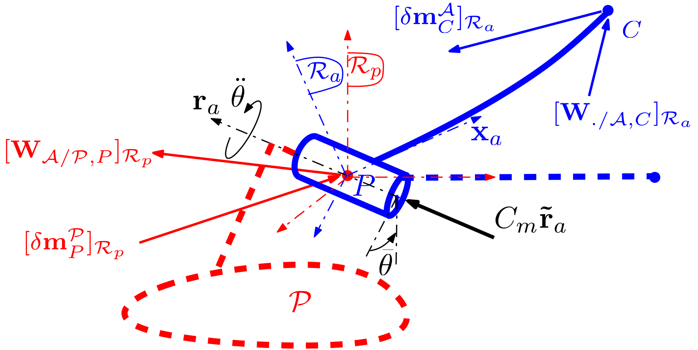
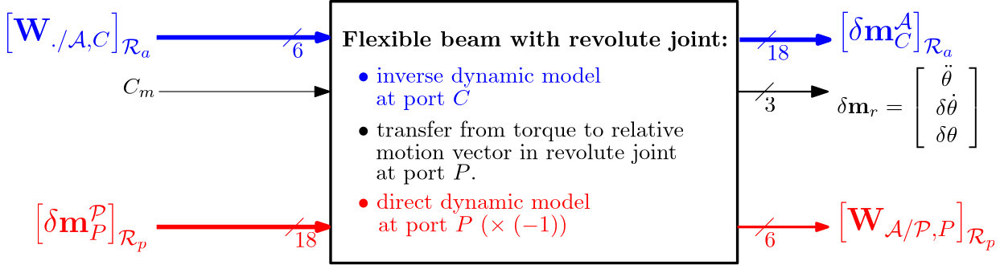
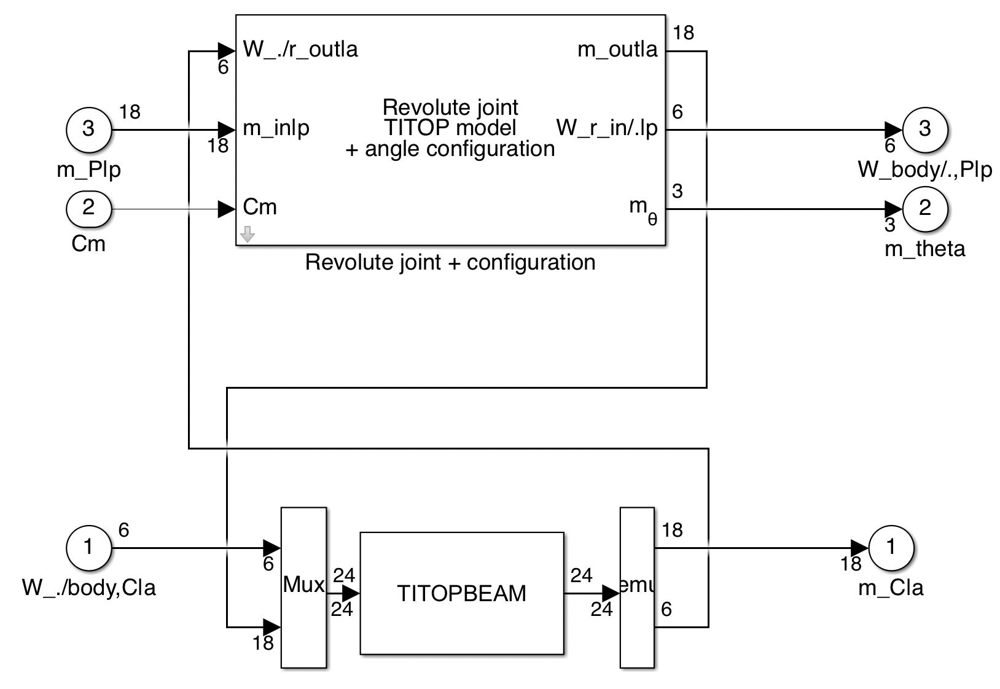

TITOP flexible beam + revolute joint
Dynamic model of a flexible beam connected through a revolute joint at one tip and loaded at the other tip
Considering a flexible beam $\mathcal{A}$ connected to a parent body $\mathcal{P}$ through a revolute joint at one tip $P$ and to a child body at the other tip $C$, this block computes the $27\times 25$ dynamic model, linearized around a given revolute joint configuration $\bar\theta$, composed of:
- the $18 \times 6 $ transfer from the wrench applied to the body $\mathcal A$ at the point $C$ to the motion vector of the body $\mathcal A$ at the point $P$, projected in the body frame $\mathcal R_a$,
- the $3 \times 1 $ transfer from the in-joint torque to the relative motion vector variation $\delta\mathbf m_r=\left[\ddot\theta,\;\;\delta\dot\theta,\;\;\delta\theta\right]^T$,
- the $6 \times 18 $ transfer from the motion vector imposed by the parent body $\mathcal P$ at the connection point $P$ to the wrench applied by the input shaft of the revolute joint to the parent body $\mathcal P$ at the point $P$, projected in the parent body frame $\mathcal R_p$,
Remarks:
- This block includes 2 integrators to model the rigid mode of the revolute joint. The initial conditions on these 2 integrators are null since only the linear model and small variations around $\bar\theta$ are considered. That justifies the notation $\delta\dot\theta$ and $\delta\theta$ for the successive integration of the accelarations $\ddot\theta$ (assumed to be small also).
see also: General notations, Revolute joint + configuration, TITOP flexible beam, Multi port rigid body, Multi port rigid body + revolute joint, 1-port flexible body
Contents
Description
The flexible beam $\mathcal{A}$ connected to the parent body $\mathcal{P}$ at point $P$ through a revolute joint and loaded at point $C$ is depicted in the following Figure.

Let us define:
- $\mathcal{R}_a$: the body frame attached to $\mathcal{A}$: it is assumed that the beam axis is along the $\mathbf x_a$-axis of $\mathcal R_a$,
- $\mathcal{R}_p$: the body frame attached to $\mathcal{P}$,
- $\mathbf{r}_a$: the direction of the revolute joint axis and $\mathbf{\tilde{r}}_a$ a unitary vector along this direction,
- $\bar\theta$: the angular configuration of the revolute joint: $\mathcal{R}_a$ is obtained from $\mathcal{R}_p$ by a rotation of $\theta$ around $\mathbf{r}_a$,
- $P$ and $C$: the 2 tips of the beam $\mathcal{A}$,
- $C_m$: the driving torque which can be applied inside the revolute joint by an external driving system,
- $\ddot{\theta}$, $\delta\dot\theta$, $\delta\theta$: the relative angular acceleration, velocity and position variations of the body side shaft w.r.t. to the parent side shaft, around $\bar\theta$,
- $\mathbf{W}_{./\mathcal A,C}$: the external wrench ($6\times 1$) applied to the body $\mathcal A$, at point $C$,
- $\delta\mathbf{m}^{\mathcal A}_{C}$ the motion vector ($18\times 1$) of the body $\mathcal A$ at the point $C$.,
- $\delta\mathbf{m}^{\mathcal P}_{P}$ the motion vector ($18\times 1$) of the parent body $\mathcal P$ at the point $P$,
- $\mathbf{W}_{\mathcal A/\mathcal P,P}$: the wrench ($6\times 1$) applied by input shaft of the revolute joint on the parent body $\mathcal P$, at point $P$,
The dynamics model can be represented by the following block diagram:

This block uses the 2 blocks: TITOP flexible beam and Revolute joint + configuration.
Its main interest are:
- it is not required to specify the output shaft inertia $J_r$ in the revolute joint block,
- the angular configuration $\bar\theta$ of the revolute joint can be declared as a varying parameter.
Ports
Inputs:
- W./body,C|a $=\left[\mathbf{W}_{/\mathcal A,C}\right]_{\mathcal R_a}$: 6 component signal (units: $N$ and $N.m$),
- Cm_at_P $=C_m$: scalar signal (unit: $N.m$).
- m_P|p $=\left[\delta\mathbf{m}^{\mathcal P}_{P}\right]_{\mathcal{R}_p}$: 18 component signal (units: $m/s^2$, $rd/s^2$, $m/s$, $rd/s$, $m$, $rd$),
Outputs:
- m_C|a $=\left[\delta\mathbf{m}^{\mathcal A}_{C}\right]_{\mathcal{R}_a}$: 18 component signal (units: $m/s^2$, $rd/s^2$, $m/s$, $rd/s$, $m$, $rd$),
- m_theta_at_P $=\delta\mathbf m_r=\left[\ddot\theta,\;\;\delta\dot\theta,\;\;\delta\theta\right]^T$: the relative motion vector (unit: $rd/s^2$, $rd/s$, $rd$).
- Wbody/.,P|p $=\left[\mathbf{W}_{\mathcal A/\mathcal P,P}\right]_{\mathcal{R}_p}$: 6 component signal (units: $N$ and $N.m$),
Parameters
All parameters are expressed in the body frame $\mathcal{R}_a$. Each parameter (except $\mathbf r_a$) can be an uncertain parameter declared with "ureal".
The main parameters are:
- length along $x$ (unit: $m$): $l$,
- cross section (unit: $m^2$): $s$,
- mass density (unit: $Kg/m^3$): $\rho$,
- Young modulus (unit: $N/m^2$): $E$,
- second moment of area along z axis (unit: $m^4$), $I_z$,
- second moment of area along y axis (unit: $m^4$), $I_y$,
- Poisson coefficient; $\nu$,
- damping ratio; $\xi$,
- A check box to overright the uncertainties on the physical paramets (length, mass desity,...) by a common relative uncertainty (percentage) on the first $n_u\le 10$ flexible mode frequencies of the clamped at P / free at C beam,
- the $3\times 1$ revolution axis direction $\mathbf r_a$: $[\mathbf r_a]_{\mathcal{R}_a}=[\mathbf r_a]_{\mathcal{R}_p}$,
- the angular configuration $\bar\theta$ (unit: $rd$).
Remark: if $\bar\theta$ is declared as varying parameter with "ureal" and mode "Range" (ex: ureal('theta',0,'Range',[-pi pi])), then "ulinearize" computes a LPV model parameterized according to the real parameter labelled "tan_theta_div4".
Simulink diagram under the mask
